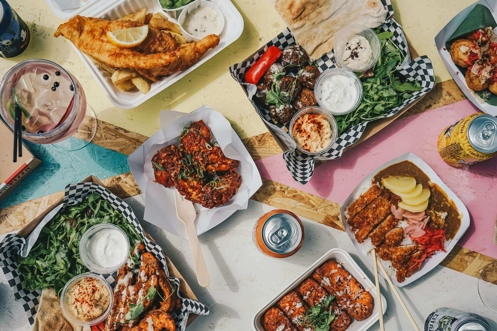

О компании

ОбедПро готовит и привозит бизнес-ланчи в офисы Москвы. Мы работаем по будням с 11:00 до 15:00: повара готовят утром, а курьеры привозят заказ к обеду — горячим и вовремя.
Меню обновляется каждую неделю: супы, салаты, горячие блюда и напитки. Можно собрать свой ланч или выбрать готовый набор на день.
Наши преимущества
- Привозим за 30–45 минут в пределах МКАД
- Готовим утром из свежих продуктов
- Бесплатная доставка при заказе от 5 ланчей
- Есть вегетарианские и постные варианты
Самые популярные блюда
Цены указаны за порцию. К каждому горячему блюду прилагаются хлеб и соус бесплатно.
| № | Блюдо | Вес | Цена |
|---|---|---|---|
| 1 | Борщ с говядиной и сметаной | 300 г | 190 рублей |
| 2 | Салат «Цезарь» с курицей | 180 г | 240 рублей |
| 3 | Куриная котлета с картофельным пюре | 250 г | 260 рублей |
| 4 | Паста карбонара | 280 г | 290 рублей |
| 5 | Суп-пюре из тыквы с гренками | 300 г | 170 рублей |
| 6 | Морс клюквенный | 200 мл | 90 рублей |